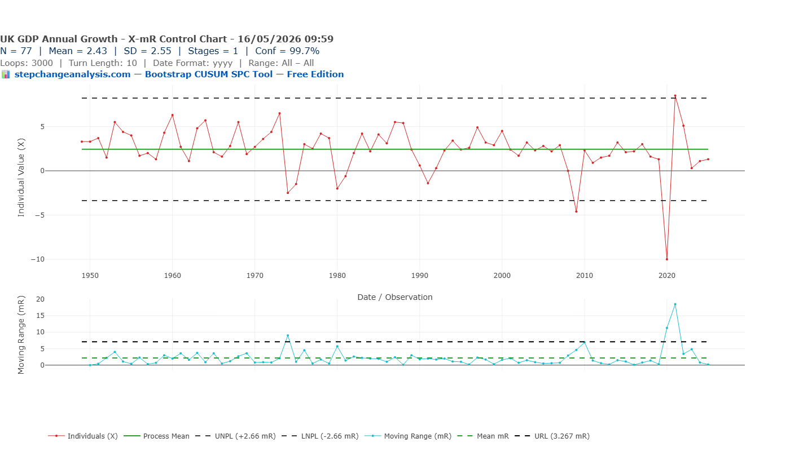
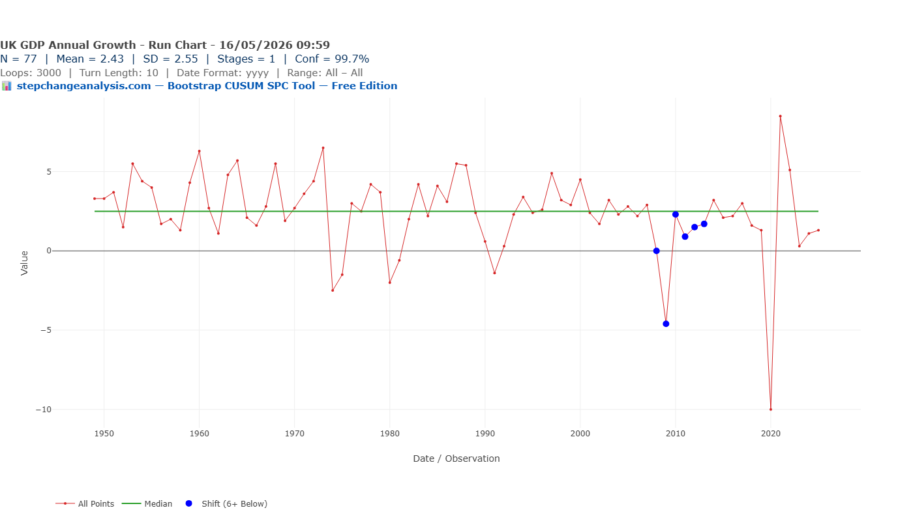
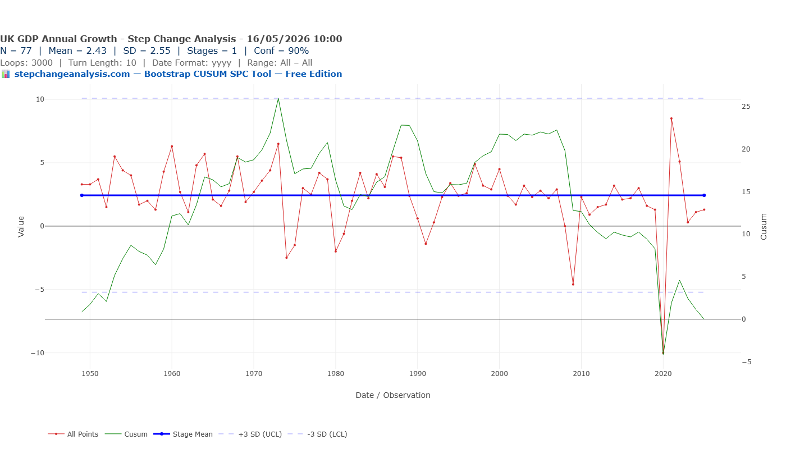
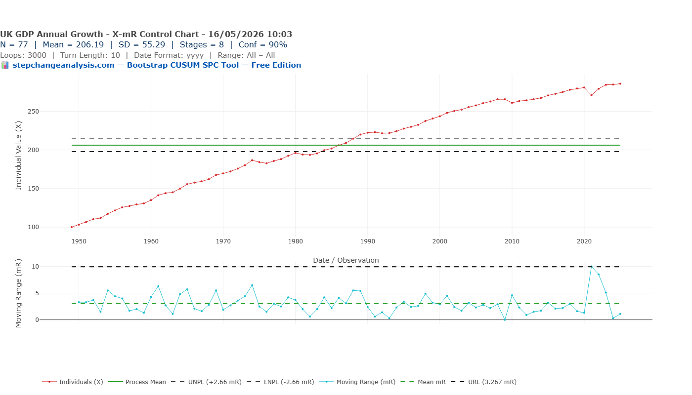
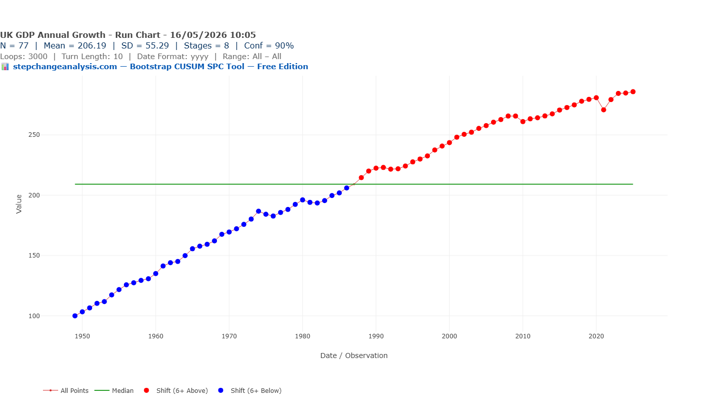
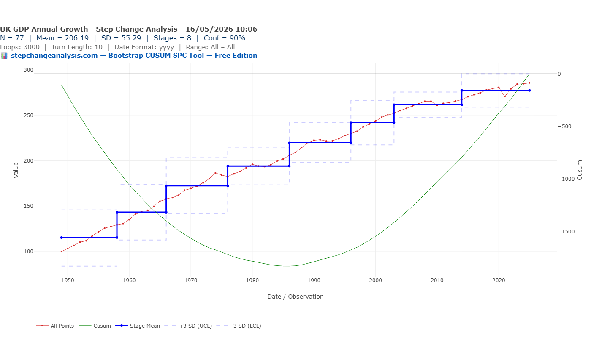
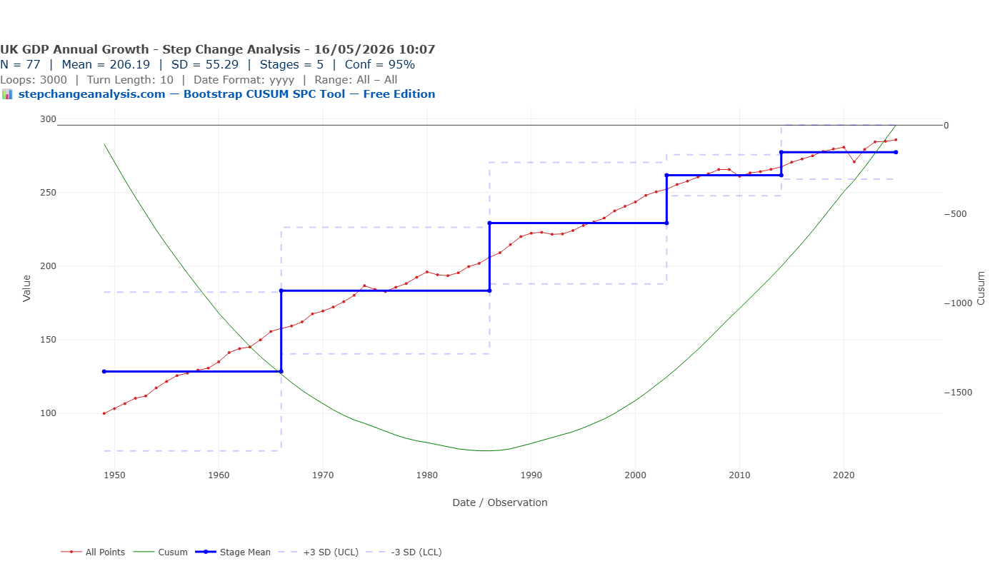
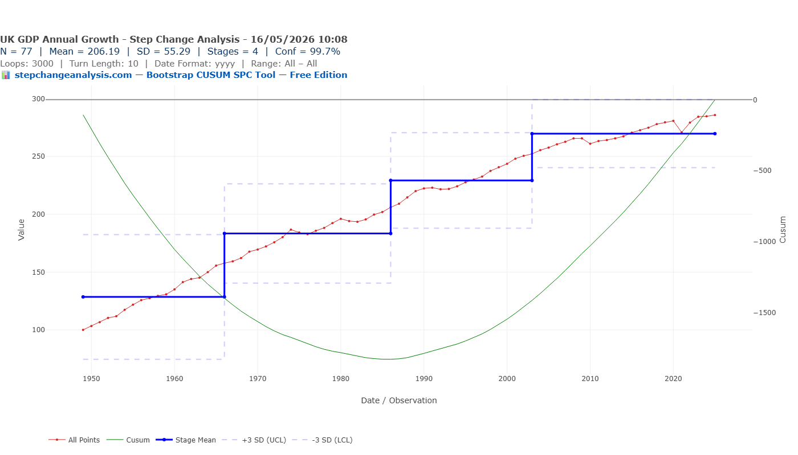

The conventional story
The standard narrative of UK economic history goes something like this: steady post-war growth, punctuated by crises — the IMF bailout of 1976, the recession of the early 1980s, the financial crisis of 2008. Plot annual GDP growth rates and you get a noisy line oscillating around a long-run mean, with a sharp dip in 2008–09 that the economy eventually recovered from.
The conventional conclusion: volatile but mean-reverting. A story of shocks and recoveries.
But we have been asking the wrong question. The question is not “did growth temporarily fall?” It is “has the economy’s underlying trajectory permanently shifted?” These are completely different questions — and they require completely different analytical methods.
Part 1 — The wrong question: annual growth rates
Here is what the three most common chart types tell you when applied to UK annual GDP growth rates (%) from 1949 to 2025.
Chart 1: X-mR Shewhart Control Chart — Annual Growth Rate %
The X-mR chart is the most commonly used SPC chart in quality improvement and process monitoring. Applied to UK annual GDP growth rates:

Chart 2: Run Chart — Annual Growth Rate %

Chart 3: Bootstrap CUSUM — Annual Growth Rate % — Result: 1 Stage
Now apply the most sophisticated method — Bootstrap CUSUM step-change analysis — specifically designed to detect structural change:

And yet the UK economy has been visibly, structurally slowing for six decades. How can three legitimate analytical methods all miss it? Because they are all answering the wrong question.
Part 2 — The right question: cumulative level
Annual GDP growth rates measure year-to-year fluctuation. They are mean-reverting by design — recessions cause temporary dips; recoveries bring them back. The right question is not about the acceleration. It is about the trajectory.
Cumulative GDP level data — built by compounding annual growth rates into an index starting at 100 in 1949 — captures that trajectory directly. When Bootstrap CUSUM is applied to cumulative level data, it answers: “has the economy’s long-run growth path permanently shifted?”
Chart 4: X-mR Chart — Cumulative Index

Chart 5: Run Chart — Cumulative Index

Chart 6: Bootstrap CUSUM — Cumulative Index — 90% Confidence — 8 Stages

Notice the CUSUM turning point — the peak of the green CUSUM line — occurs around 1987. This is the moment at which accumulated deviation from the long-run mean was greatest. After 1987, the cumulative index began consistently exceeding its historical average. Bootstrap CUSUM identifies this as the boundary between Stage 5 and Stage 6 — the shift from the Lawson boom era into the New Labour stability period.
Applied to cumulative level: 8 distinct stages at 90% confidence. A continuous staircase of structural shifts.
What the data actually shows
| Stage | Period | Index Mean | Change % | Growth Regime |
|---|---|---|---|---|
| 1 | 1949–1958 | 115.35 | Baseline | Post-war recovery |
| 2 | 1958–1966 | 143.19 | +24.1% | Macmillan boom |
| 3 | 1966–1976 | 172.55 | +20.5% | Wilson turbulence, sterling crisis |
| 4 | 1976–1986 | 194.16 | +12.5% | IMF crisis, end of post-war consensus |
| 5 | 1986–1996 | 220.04 | +13.3% | Lawson boom, financial deregulation |
| 6 | 1996–2003 | 241.90 | +9.9% | New Labour stability |
| 7 | 2003–2014 | 261.77 | +8.2% | Pre-crisis peak — absorbs 2008 entirely |
| 8 | 2014–2025 | 277.40 | +6.0% | Post-austerity new normal — weakest in 77 years |
Each successive stage delivers less growth than the last — a 60-year structural deceleration, continuous across governments of every political persuasion.
Note: observe how the steps in the Bootstrap CUSUM chart get smaller over time — each stage boundary is closer to the last than the one before it. This is the visual signature of structural deceleration: the economy is still growing, but each growth regime delivers less than its predecessor.
Does the conclusion hold at higher confidence levels?


What this means for economic analysis
If the deceleration predates 2008, 2016, and 2020, then fixing those “events” will not reverse it. The structural breaks identified — 1966, 1976, 1986, 2014 — suggest trajectory shifted at moments of institutional and policy change. Understanding why those breaks occurred is a more useful question than relitigating the financial crisis or Brexit.
⚠ Honest caveats
- This uses total GDP, not per capita GDP — population growth affects the picture
- GDP measurement methodology has changed over 77 years
- The analysis identifies that shifts occurred and when — attribution requires separate economic analysis
- This is a statistical description, not an economic forecast
Try it yourself
📋 Step by step — UK GDP cumulative index
- Download UK annual GDP growth data from the World Bank or ONS — or use the prepared CSV download above
- In Excel, create a cumulative column: set 1949 = 100, then
=prev_row * (1 + growth_rate/100) - Add a Year column: 1949, 1950, 1951…
- Save as CSV and upload to stepchangeanalysis.com
- X-Axis = Year, Y-Axis = Cumulative, Date Format = YYYY, Turn Length = 10, Loops = 3000, Conf % = 90
- Click Recalculate Chart
Run this analysis on any time series data
Free, browser-based, no installation, no data leaving your computer.
▶ Open the Free ToolThe closing thought
The chart of UK GDP growth rates tells you the economy fluctuates. The Bootstrap CUSUM chart of cumulative UK GDP tells you the economy has been slowing for 60 years — continuously, structurally, and regardless of who was in power.
The difference is not in the data. It is in the question you ask of it.